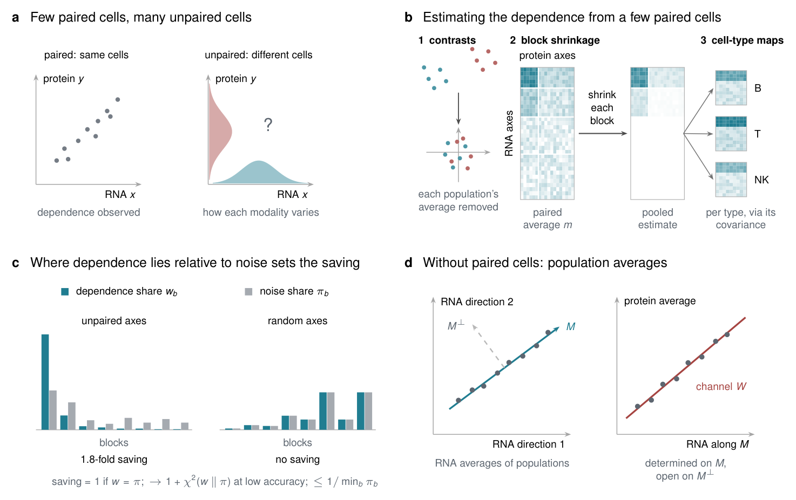
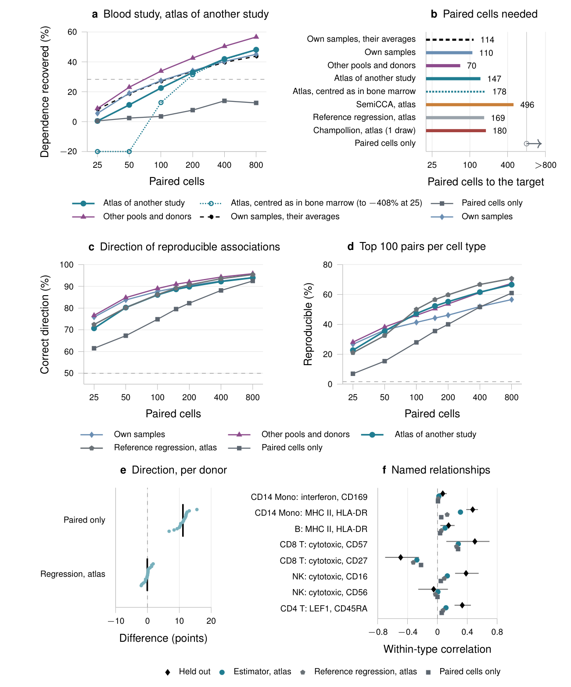
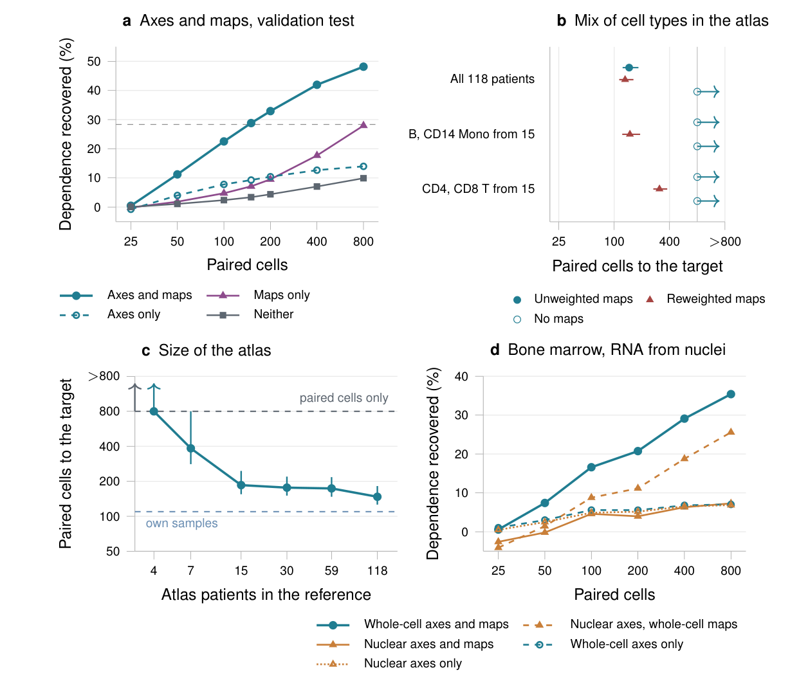
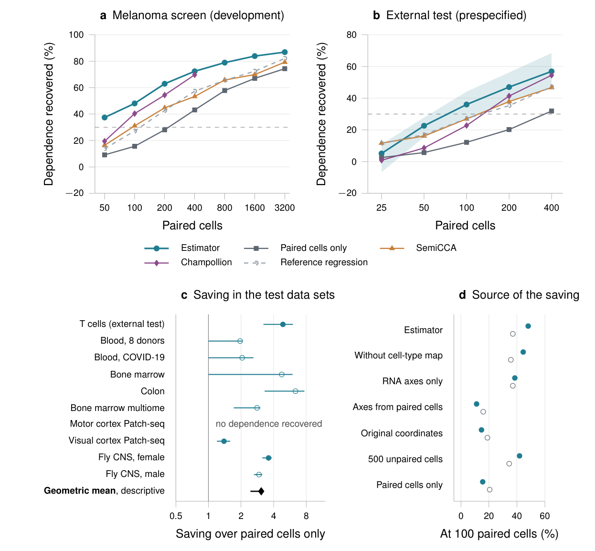
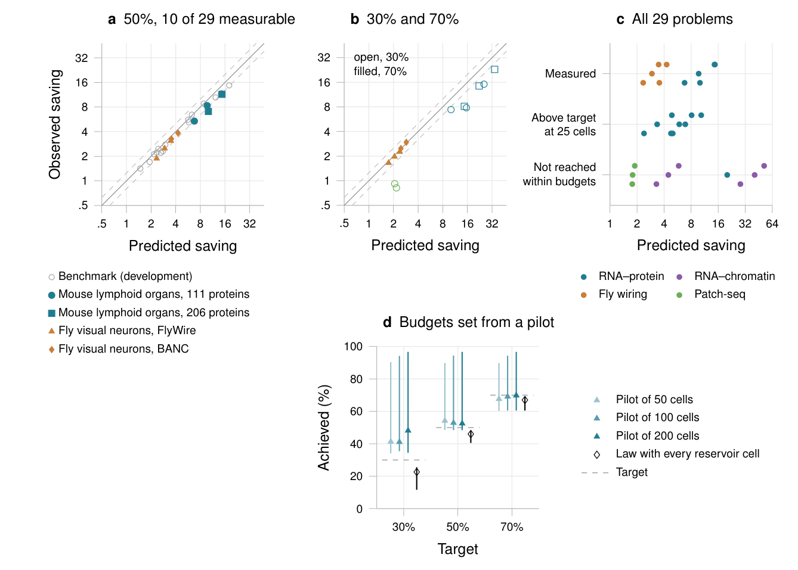
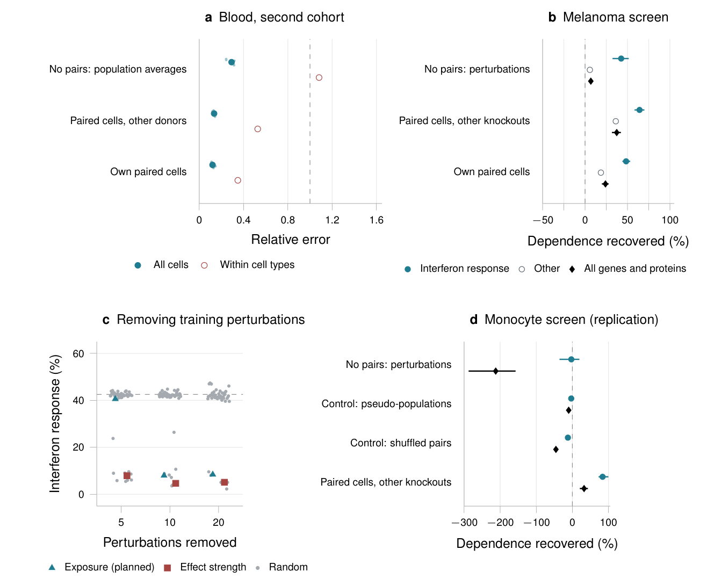

Abstract
Measuring two modalities, such as RNA and protein, in the same cells shows how they vary together, but paired assays are costly. Unpaired measurements, which make up most single-cell data, cannot reveal this but provide each modality's principal axes and covariance within cell types. In a prespecified test on an independent blood study, our estimator with 147 paired cells and another study's atlas estimated RNA–protein correlations within broad cell types better than paired-only methods with 800. With 100 paired cells, it predicted the direction of 86% of reproducible gene–protein associations, against 75% for paired-only methods (follow-up). Across nine further data sets, paired-only methods needed at least 3.1 times as many paired cells as our estimator to reach data-set-specific targets (descriptive geometric mean). In a prespecified test, the distribution of correlations and noise along the axes predicted their saving in the four data sets from two studies where it could be measured. Without paired cells, population averages identify correlations only where populations differ.
Unpaired cells show where the dependence lies
Unpaired cells cannot reveal the dependence (Proposition S1), but they show where to look for it: along each modality's principal axes, ordered from the leading axes, which carry the most variation, to many trailing ones (Fig. 1a). In the eight benchmark data sets with recoverable dependence (described below; exploratory), the dependence concentrated along the leading axes. The five leading RNA axes carried 73% of its sum of squares, and the trailing axes carried mostly noise (Supplementary Note 7).
Our estimator uses these axes in three steps (Fig. 1b; Methods). First, it removes each population's average from its paired cells, so that only variation within populations remains. It subtracts the unpaired cells' averages when these come from the same populations and otherwise replaces the paired cells of each population by contrasts, differences between them, so that shifts in the average between sites, batches and studies cancel. Second, it computes the correlations between each gene's RNA and each protein in the paired cells and rotates them onto the principal axes of the unpaired cells. It groups the rotated correlations into blocks, from the leading axes to the trailing ones, and multiplies each block by a factor between zero and one, the James–Stein factor, estimated from the paired cells (block shrinkage). A block whose entries are large compared with their noise is left nearly unchanged, and a block dominated by noise is shrunk to or near zero. Third, because a small paired sample cannot reliably estimate dependence separately within every cell type, a cell-type map turns this pooled estimate into one for each cell type, using that type's RNA covariance in the unpaired cells. The map assumes that protein depends on RNA through the same linear relation, which we call a channel, in every cell type; under that assumption it follows from an exact relation between covariances (Proposition S7). For estimation, the map is regularized (Methods). The block partition, shrinkage rule and map construction were fixed during development; their inputs are estimated from the paired and unpaired cells without using held-out cells.

An atlas from another study cuts the budget of paired cells
A laboratory planning a paired study usually has unpaired profiles at hand, from its own runs, from other studies or from atlases, large collections of cells from many donors. In a prespecified validation test, we assessed the benefit of an external atlas for a study of healthy blood that we had not analysed before (Fig. 2a,b). The study measured RNA and surface proteins in the same cells by CITE-seq (cellular indexing of transcriptomes and epitopes by sequencing). In the primary arm, the unpaired cells came from the CITE-seq atlas of a COVID-19 study of 118 patients, profiled at other sites with another antibody panel. RNA and protein covariances were estimated from disjoint sets of atlas cells, with cell types defined by the published annotations. We held out each of 34 samples from 18 donors in turn and scored the dependence within five broad cell types. Paired cells came from two other samples of the held-out sample's processing pool, a set of samples processed together. The held-out donor contributed none of the paired or unpaired cells used for estimation.
With the atlas, the estimator reached the test's accuracy target, half of the best recovery that any method reached at any budget, with 147 paired cells. Paired-only estimation did not reach it within 800 (saving at least 5.4-fold; 95% CI, 4.8–6.0). With 100 paired cells, the estimator recovered 23% of the dependence, against 3.5% for paired-only estimation (Fig. 2a). The saving held for every donor and processing pool (exploratory) and when each curve came from a single draw of paired cells rather than the average of five (follow-up; Supplementary Tables 15, 16 and 33). With unpaired cells from the study itself, measured with the same assay, the estimator needed fewer paired cells still: 70 with cells of the study's other pools and donors and 110 with the remaining cells of the paired samples themselves (Fig. 2b).
Other methods given the same paired cells and atlas also gained from it (follow-up comparison; Fig. 2b; Supplementary Table 13). Reference regression, a ridge regression that predicts each protein from RNA in the paired cells and then converts the coefficients into RNA–protein correlations using the atlas's RNA correlations, reached the target with 169 paired cells. Champollion, which learns from paired cells how to match unpaired ones, and semi-supervised canonical correlation analysis (SemiCCA) needed more. Most of the saving thus came from the atlas's correlations, whichever method used them.
To show which biological relationships become recoverable, we chose eight relationships between a gene program (a set of genes that act together) and a protein within a cell type from prior knowledge, before scoring them (follow-up; Fig. 2f; Supplementary Table 34). With 100 paired cells, the estimator's recovery exceeded that of reference regression for 7 of the 8 relationships and that of paired-only estimation for 7 of the 8. For the association between MHC class II genes and HLA-DR protein in CD14 monocytes, it recovered 80%, against 46% for reference regression and 19% for paired-only estimation.

A reference transfers through its axes and cell-type maps, not its averages
The atlas contributes principal axes, along which the paired estimate is shrunk, and each cell type's covariance, which the maps use. In a follow-up analysis, we rescored the validation test with the atlas's axes alone, its maps alone or neither (Fig. 3a). With 100 paired cells, the axes alone recovered 7.8% of the dependence within cell types and the maps alone 4.7%, against 2.4% with neither, whereas together they recovered 23%. The axes make the pooled estimate accurate from few cells, and the maps make it specific to each cell type.
The maps also carry the atlas's mix of cell types: they use the atlas's covariance pooled over cell types, which weights each cell type by its proportion in the atlas rather than in the paired cells. We rebuilt the atlas with its B cells and CD14 monocytes, or its CD4 and CD8 T cells, taken from only 15 of its 118 patients (exploratory). With the pooled covariance reweighted to the cell-type proportions of the paired cells (follow-up), the estimator reached the target with 148 and 311 paired cells, against 145 for the unchanged atlas on the same draws, or 131 with its maps reweighted; the axes of the skewed atlases worked as before (Fig. 3b). An atlas containing every cell type but drawn from only 15 of the 118 patients let the estimator reach the target with 185 paired cells (exploratory; Fig. 3c).

A threefold saving across tissues, species and pairs of modalities
We developed the estimator on two perturbation screens that measured RNA and surface proteins in cells carrying single-gene knockouts: Perturb-CITE-seq of melanoma cells and ECCITE-seq of monocytic THP-1 cells. With 100 paired cells, it recovered 48% and 37% of the dependence in cells whose knocked-out gene had been held out, against 16% and 21% for paired-only estimation (Fig. 4a,d). The gain came from the unpaired axes. The same shrinkage along axes estimated from the paired cells, or in the original coordinates, recovered far less, whereas 500 unpaired cells per modality kept most of the gain (Fig. 4d).
We then tested the fixed estimator on ten data sets not used to develop it. In a prespecified external test on primary T cells that each overexpress one gene, it reached its target, 30% recovery, with 73 paired cells, whereas paired-only estimation needed 357. It met all three prespecified comparisons, with paired-only estimation, SemiCCA and Champollion (Fig. 4b). A prespecified benchmark then held out donors, patients, mice, recording days or neuron types in nine data sets. Seven pair RNA with surface proteins, chromatin accessibility or the electrical recordings of the same neurons (Patch-seq), and two pair the brain and nerve-cord partners of fly neurons (Fig. 4c; Methods). In these tests, the unpaired cells were cells of the same data set that kept only one of their two modalities, and the paired cells were centred on the unpaired cells' averages (Methods). In the nine of these ten data sets in which any method recovered dependence, paired-only estimation needed at least 3.1 times as many paired cells as the estimator to reach each data set's target (descriptive geometric mean, exploratory; 95% CI, 2.4–3.2; range, 1.4 to at least 6.4; Fig. 4c). Over the eight benchmark data sets with recovered dependence, SemiCCA, which also uses unpaired cells, needed at least 2.3 times as many (geometric mean; 95% CI, 1.8–2.4; Supplementary Note 6).

Where the dependence lies predicts how much the axes save
To isolate what the unpaired axes save, we compared block shrinkage with single-block shrinkage, which shrinks all entries together as one block; neither used cell-type maps. We call the number of paired cells that single-block shrinkage needs to reach a given accuracy, divided by the number block shrinkage needs, the axes' saving. Two sets of shares describe the blocks: the dependence shares, the fraction of the dependence in each block, and the noise shares, the fraction of the per-cell noise. With oracle-linear shrinkage, the axes' saving follows from these shares in closed form (Proposition S10; Fig. 1c). It is one when the two sets of shares coincide, as they nearly do for random axes. It grows as the dependence concentrates in blocks that carry little of the noise, and at low accuracy it approaches $1+\chi^2(w\,\|\,\pi)$, where the chi-squared divergence $\chi^2$ measures how far the dependence shares $w$ depart from the noise shares $\pi$. We call this relation the law.
The law's inputs can be measured. Unpaired cells give the noise shares that the modalities would have if they were independent. A small pilot of paired cells gives unbiased raw estimates of each block's squared dependence; we form plug-in estimates of the dependence shares by setting negative estimates to zero and normalizing (Proposition S11).
We developed the protocol for applying the law on the nine benchmark data sets after they had been scored (Fig. 5a) and then tested it prospectively, fixing the protocol before extracting ten more data sets. Analysed with panels of 100, 200 and 400 features, these gave 29 problems. In 10 of them, from four data sets in two studies, the axes' saving could be measured within the budgets tested (Fig. 5c; Supplementary Table 22). All six prespecified hypotheses were met (Supplementary Table 1). The law's median error was 21% (95% CI, 11–29%; Fig. 5a), and it ranked the problems almost perfectly (Spearman $\rho=0.98$). Averaging the problems within each data set preserved their ordering (follow-up; Supplementary Table 37).
In a follow-up analysis, a random pilot of 50 to 200 paired cells was used to estimate the law's inputs and to set the total budget for block shrinkage, pilot included. At a target of 50% recovery, block shrinkage with these budgets reached the target in 64% to 65% of random pilots (Fig. 5d; Supplementary Table 38).

Population averages identify the dependence only where populations differ
Differences between populations offer a route to the dependence that needs no paired cells. Suppose, as the cell-type maps do, that every population shares one channel, and that each population is profiled in both assays, even if in different cells. The populations' average RNA and protein then determine the channel along the directions in which their average RNA profiles differ. Population averages alone leave it undetermined along all other directions (Proposition S2; Fig. 1d).
Perturbations create variation within a cell type, but along few directions. In the melanoma screen, under a prespecified protocol, channels learned from the averages of 505 populations, one per knocked-out gene and culture condition, recovered 6.8% of the dependence in held-out perturbations (95% CI, 4.1–9.4%). The same model fitted to the paired cells of other knockouts recovered 37% (Fig. 6b). For the genes and proteins of the interferon response, which the knockouts affected most, the channels recovered 43% of the dependence (exploratory). This recovery rested on the perturbations with the largest effects: without the five training perturbations that shifted RNA most, it fell to 7.9%, against 36% without five random ones (exploratory; Fig. 6c). Population averages thus identified the dependence along the directions in which populations differed, as Proposition S2 predicts.

Discussion
Only paired cells show directly how two modalities vary together, yet a few sufficed, because unpaired cells supplied two complementary kinds of structure. Their principal axes separate the dependence from the noise, so that a few paired cells estimate the dependence pooled over cell types, and how much the axes save can be predicted from where the dependence lies relative to the noise. Their covariance within each cell type then turns the pooled estimate into one for each type. This mapping step determined whether a reference from another study transferred: references of the same assay transferred, and reweighting to the paired cells' cell-type proportions let skewed references reach the target again. Correlation structure measured with the same assay carried over between sites, studies and animals, whereas averages did not; batch correction assumes the same when it removes shifts in average and scale between batches.
For a laboratory planning a paired study, these results suggest using same-assay unpaired profiles from the study when available, or an atlas reweighted to the paired sample's cell-type proportions. A paired pilot can help assess the potential saving from the unpaired axes. Reference regression, which likewise passes the paired estimate through the atlas's covariance, came closest to the estimator. Without paired cells, population averages determine the dependence only along the directions in which they differ, as when bulk tissue profiles are separated into cell types. Along the other directions, other information or assumptions are needed, such as covariance shared between populations (Supplementary Note 1). These directions show which parts of a prediction made without pairs rest on population averages and which rest on further assumptions, such as those of alignment methods.
Limitations
Scope. Our estimator targets linear dependence within populations, so nonlinear relations are outside its scope. Because unpaired data do not determine the dependence (Proposition S1), the saving rests on the dependence concentrating along the leading unpaired axes, as it did here. The exact covariance relation underlying the cell-type maps assumes a shared channel (Proposition S7); the implemented maps regularize this relation and may retain bias (Supplementary Note 5). The risk bound for the estimated shrinkage factors (Proposition S9) is absolute and can be loose for small blocks or heavy-tailed cross-products. It assumes independent cross-products of paired cells, which contrasts break; after contrasts, the noise estimate is calibrated only empirically (Proposition S12).
Centring and transfer. The validation test examined a workflow revised after the bone-marrow test had been scored. As prespecified, the bone-marrow test centred each population's paired cells on their own average, which biased the noise estimate downwards and, with few paired cells, gave estimates worse than predicting zero correlation (Fig. 2a; Supplementary Fig. 2a). With nuclear RNA as its unpaired cells, neither the estimator nor paired-only estimation reached the target, so its second hypothesis was not met. Using nuclear RNA for both the axes and the maps, the estimator recovered only 7.3% of the dependence (exploratory). Centring on the averages of other sites or animals made the estimator worse than predicting zero correlation at every budget (Supplementary Fig. 2); the prespecified fly analysis, which centred on the other animals' averages, recovered % with 100 paired neurons. With unweighted maps, the estimator did not reach the target with either skewed atlas within 800 paired cells (Fig. 3b), and with 25 paired cells reweighted maps were worse than predicting zero correlation.
Validation test. The validation covers one blood study and five broad cell types, and its readout and the comparison with other methods were specified after it had been scored. The test assumes common cell-type annotations supplied by the original studies; it does not evaluate labels inferred separately from each retained modality. As in the other tests, its intervals are conditional on the fitted predictions, reference data, panels, paired samples and fold design (Supplementary Note 11 examines single draws and reference resampling). Using the atlas required 1.34 times as many paired cells as using the paired samples' own unpaired cells (95% CI, 1.15–1.56), so the prespecified criterion for calling the atlas no worse was not met. Given the atlas, the estimator's advantage over reference regression was small and unstable (ratio 1.15; 95% CI, 1.003–1.36; Supplementary Table 33). Its advantage over Champollion was not significant. A larger share of reference regression's top-ranked pairs were reproducible associations, and the estimator predicted more directions correctly than reference regression in only 10 of 18 donors. The readout's associations are reproducible between halves of a held-out sample, not across cohorts, and most lay between the finer cell states annotated by the study's authors, within which 31,509 rather than 120,649 qualified. Against the dependence within finer states, predictions for broad cell types kept an advantage of 2.8 percentage points over paired-only estimation in direction but recovered %, against % for paired-only estimation and % for reference regression. For the weak association between cytotoxic genes and CD56 in NK cells, the estimate was worse than predicting zero correlation.
Benchmark. The 3.1-fold saving is a descriptive geometric mean at each data set's own target, computed after all tests had been scored, not the saving to expect in a new study. The benchmark's target and its rule for setting aside data sets without recovered dependence were amended after some data sets had been scored; at the registered target, the geometric-mean saving was 1.5 (95% CI, 1.4–1.6). Six of the nine savings are lower bounds, and at a fixed 20% recovery the saving could be measured in only 2 of 10 data sets (Supplementary Table 39). The external test's registered scoring code scored a one-sided variant of the estimator, not the planned two-sided one; both met all three hypotheses (Supplementary Note 5).
The law. The law approximates the axes' saving, not the estimator's saving over paired-only estimation. An earlier form, fixed before the benchmark to predict the latter, did not predict the ranking of the benchmark's savings at the registered target (Spearman $\rho=-0.09$) or the amended one ($\rho=0.42$; P = 0.104), and the law was developed on those data sets afterwards. That unpaired noise shares approach the true ones as the dependence weakens is shown only for jointly Gaussian measurements (Proposition S11). The prospective test rests on 10 of 29 problems, from four data sets of two studies; in them the law overpredicted the axes' saving by about a fifth at 50% recovery and by three quarters at 30%. It did not hold for sparse chromatin counts. Treating the four data sets as exchangeable gives a rank-test P value of 0.042, the smallest attainable; the two study families provide limited evidence for prediction across studies. A pilot of up to 200 paired cells predicted the axes' saving with a median error of 12% (95% CI, 4–147%). Because the law assumes the best factor in every block, the budget it set from all available paired cells was a median 0.77 times what block shrinkage needed and reached 50% recovery in only 26% of replicates, and pilots of 100 or 200 cells usually exceeded the budget that the law set.
Learning without pairs. In blood, within cell types, where donors hardly differ, the channel's predictions were worse than predicting zero correlation (relative error 1.082; 95% CI, 1.014–1.162; Fig. 6a), so the prespecified hypothesis on recovery within cell types was not met. In colon, a channel learned in blood was barely better than predicting zero correlation (relative error 0.988), achieved % (95% CI, to 15%) of the improvement that paired cells gave and was worse than predicting zero correlation within cell types (relative error 1.274), so neither colon hypothesis on recovery was met. In the melanoma screen, learning without pairs recovered 18% (95% CI, 12–25%) of what the same model recovered from paired cells, short of the prespecified half. Removing the five training perturbations ranked highest by exposure, the planned ranking (how far a perturbation moves RNA along directions in which cells already vary), left the interferon recovery at 41%, against 36% after random removals, so the planned criterion of a larger loss was not met. In the monocyte screen, learning without pairs did not replicate under the same prespecified rules: its predictions were worse than predicting zero correlation (%; 95% CI, to %) and than both controls (Fig. 6d), and none of its five hypotheses was met.
Conclusions
Tens to a few hundred paired cells, centred within their populations, became far more informative when combined with unpaired profiles of the same assay, from the study itself or from an atlas reweighted to the paired cells' cell-type proportions. Where the dependence lies along the unpaired axes indicates how much they save, and without paired cells, population averages identify the dependence only along the directions in which populations differ.